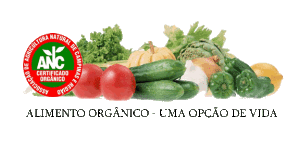
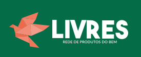
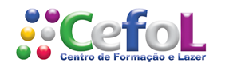
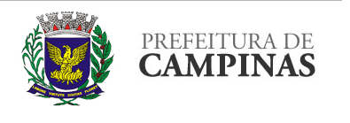
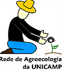
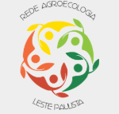
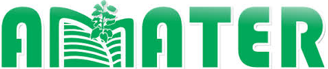

PARCERIAS

ANC
A ANC – Associação de Agricultura Natural de Campinas e Região – é uma organização não governamental sem fins lucrativos que surgiu em 1991, inicialmente com a demanda de se comercializar produtos de base ecológica na região de Campinas. Hoje, conta em seu quadro de associados, consumidores e produtores de alimentos orgânicos, além de muitas parcerias com instituições públicas, de ensino, privada e alguns coletivos.
Uma das principais atividades da ANC é a certificação de produtos orgânicos, através do sistema participativo de garantia, regulamentado pelo Ministério da Agricultura, no fim de dezembro de 2010, onde a qualidade dos produtos é aferida pelos produtores, consumidores, técnicos e outros membros da sociedade que tenham interesse em participar do processo. Fica assim permitida a utilização do Selo Orgânico, para alimentos produzidos e processados dentro de normas que garantem aos consumidores a origem e o tipo de produção daquele alimento.
A ANC é responsável pelas três feiras ecológicas que acontecem no município. Nesse sentido, tem apoiado e incentivado as feiras de produtos orgânicos onde podem ser encontradas grande variedade de frutas, verduras e legumes de época cultivadas sem utilização de insumos químicos, além de alimentos como pães, geléias e laticínios processados com matéria-prima orgânica.
Rede Livres
O Brasil é o maior consumidor de veneno do mundo. Em média, o brasileiro consome 7 litros de veneno por ano. Esse comércio movimenta mais de 2 bilhões de dólares ao ano e também causa mais de 70 mil intoxicações agudas e crônicas, segundo dados da associação brasileira de saúde (ABRASCO).
Para mudar essa realidade, o projeto Rede Livres criou um novo modelo de produção, comercialização e logística para viabilizar o consumo de alimentos sem agrotóxicos. Assim nasceu o Livres, uma plataforma que organiza grupos de consumidores, feiras e lojas que funcionam em sistema de permutas de prestação de serviços, créditos solidários, dentre outros. Este novo sistema integra produtores e consumidores, eliminando o intermediador capitalista. Promovendo o acesso da população a produtos do bem.
Sindicato dos Químicos/ CEFOL
O Sindicato Químicos Unificados foi criado com a aprovação de 93% dos (as) trabalhadores (as) da categoria em um plebiscito realizado em julho de 2001 e referendada no 1º Congresso de Base, também com a participação conjunta dos trabalhadores(as) da categoria em março de 2002, em Paraibuna-SP.
Atualmente, o Unificados representa os/as cerca de 33 mil trabalhadores dos sindicatos dos ramos químicos, plásticos, farmacêuticos, abrasivos e similares de Campinas e Osasco.
Filiados a Intersindical – Central da Classe Trabalhadora. Disponibiliza aos sindicalizados estrutura jurídica, consultas com médico especialista em saúde ocupacional, lazer e cultura de qualidade.
Além disso, mantém parcerias em projetos de saúde com a Atesq (Associação dos Trabalhadores Expostos a Substâncias Químicas), de comunicação com a TV Movimento e de formação política com o Instituto Zequinha Barreto.
MOSOA/GEPEDISC
O GEPEDISC trabalha na interseção das Ciências Sociais e Educação atingindo um amplo grupo de estudantes e pesquisadores de ambas as áreas. Desenvolve pesquisa básica ligada às diferenças sócio-culturais (principalmente as de idade, de gênero, de etnia e de classe) e seu reflexo nos processos educacionais. A atuação junto ao programa de pós-graduação tem permitido o desenvolvimento de dissertações e teses preocupadas com a transformação das relações sociais de produção e do mercado de trabalho nas sociedades modernas, questões relativas a juventude, infância e pequena infância, mulheres, negros, índios, migrações entre outras, embasando reflexões que podem servir à formulação de políticas educacionais. Dentre suas principais linhas de pesquisa encontra-se: Educação e Trabalho; Sociedade, Cultura, Política e Educação; Educação Não Formal; Educação e Diferenciação Sócio-Cultural.
Prefeitura de Campinas
Site da Assistência Social e Segurança Alimentar
Rede de Agroecologia da Unicamp(RAU)
A Rede de Agroecologia da Unicamp (RAU) constitui-se como uma rede de atores voltada a potencializar, articular e promover atividades de ensino, pesquisa e extensão em Agroecologia na Unicamp e instituições parceiras visando contribuir para ampliação das práticas e compartilhamento de saberes sobre o tema com toda sociedade. Em 2014 foi reconhecido como Núcleo de Estudos em Agroecologia (NEA), fomentado através de projeto financiado pelo edital MDA/ CNPq 39/2014.
Rede de Agroecologia do Leste Paulista
A Rede de Agroecologia do Leste Paulista está inserida em território rural que apresenta significativa importância econômica e socioambiental, em municípios paulistas e mineiros. Desde 2005, Agricultores Familiares em conjunto com diferentes atores e instituições inseridos nessa Rede vêm estruturando e construindo sistemas agrícolas mais integrados, baseados na Agroecologia, com a perspectiva de viabilizar produção agrícola com biodiversidade, equilíbrio ambiental, rentabilidade, autonomia e manejo sustentável. Uma das principais estratégias de consolidação dessa Rede foi o aperfeiçoamento de processos e diálogo entre os atores envolvidos, por intermédio da criação de um Colegiado Gestor, o qual fazem parte organizações representativas de Agricultores Familiares, instituições de ensino universitário, pesquisa agropecuária e extensão rural, com espaços de interação a partir de reuniões periódicas de avaliação e planejamento de atividades. Ao longo de seus nove anos de existência, possibilitou a realização de cursos e dias de campo com a participação de agricultores, extensionistas rurais, estudantes e representantes de grupos de consumidores, em processos de troca de conhecimentos e de domínio de práticas em temas relacionados à Agroecologia. Dentre outras atividades, encontra-se em processo de implantação Unidades de Referência (UR) em estabelecimentos rurais de agricultores familiares, assentamentos rurais e em áreas de instituição pública de pesquisa agropecuária localizadas nessa região. Estes, são espaços de geração de conhecimentos e de aprendizagem, concebidas de modo a contemplar simultaneamente as principais demandas locais e a construção de sistemas mais integrados, em direção à transição agroecológica regional. Ainda que avanços tenham sido conquistados, há ainda muitos processos a serem construídos e fortalecidos frente aos desafios de compartilhamento de conhecimentos, da capacidade organizativa, de metodologias e de tecnologias adequadas para viabilizar a consolidação da transição agroecológica em direção a uma agricultura mais sustentável.
Amater Cooperativa
A Cooperativa é formada por técnicos em diferentes áreas, como engenheiros agrônomos, agrimensores, florestais, zootecnistas, tecnólogos em agronegócios, técnicos agropecuários, contabilistas, administradores, economistas e sociólogos, com experiência e atuação junto aos agricultores familiares no estado de São Paulo.
A AMATER vem atuando na elaboração e execução de projetos voltados à agricultura familiar, agropecuária sustentável, alimentação escolar, beneficiamento da produção e agroindústria, comercialização e regularização ambiental. Busca constantemente a formação e a qualificação da equipe técnica, através de parcerias com universidades e instituições de pesquisa.
O principal objetivo da AMATER é atuar junto às associações e cooperativas de produtores rurais, instituições públicas e privadas e demais parceiros comerciais, prestando serviços especializados, promovendo a economia solidária, articulando a formação de redes e arranjos produtivos, otimizando a economia dos processos e a sustentabilidade.
